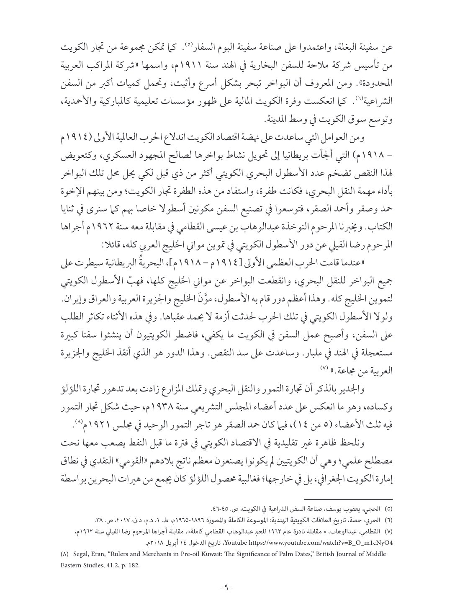

Published 2019 · Book pages, by Dr Faisal Adel Al-Wazzan, Department of History, Kuwait University; Center for Research and Studies on Kuwait, 2019
Tijarat Al-Naql Al-Bahri fi Al-Kuwait min Khilal Sirat Hamad Abdullah Al-Saqr: the Al-Qatami pages
What it is
A documentary study of the merchant Hamad Abdullah Al-Saqr. Page 9 quotes Nakhuda Abdulwahab bin Eissa Al-Qatami’s 1962 interview with Rida Al-Feeli on how the Kuwaiti fleet supplied the whole Arabian Gulf in the First World War. Page 13 lists the Al-Qatami among the families of Kuwait. Page 26 names Hamad Al-Saqr’s daughter Monira, and its note 44 says she married the late Ahmed Abdulaziz Al-Qatami. Pages 182 and 183 print a letter of 1930 noting that Mohammed bin Qatami sailed from Goa. Page 263 says Sheikh Mubarak’s first steamship, bought in Bombay in 1907 for 100,000 rupees and named Yacht Mushrif, was commanded by Nakhuda Abdulaziz Al-Qatami. Page 302 lists the 1962 interview among the oral sources. The index pages list every Al-Qatami in the book: Ahmed Abdulaziz (p. 26), Abdulaziz (p. 263), Abdullah (p. 92), Abdulwahab bin Eissa (pp. 9, 11, 23), Eissa (pp. 60, 64, 65, 66) and the family (p. 13).
Why it matters
A university study, based on the Al-Saqr family papers, that touches four generations of the family.
Page copies


Notes
Pages 11, 23, 60, 64 to 66 and 92 also name the family and are not yet on the site. Only the first pages are shown here. Family members who sign in can see all 12 pages.
Others named
Sources
Dr Faisal Adel Al-Wazzan, Tijarat Al-Naql Al-Bahri fi Al-Kuwait min Khilal Sirat Hamad Abdullah Al-Saqr: dirasa watha’iqiya, Center for Research and Studies on Kuwait, 2019
How this text was made: Photographed from the printed pages.
Open in the interactive site